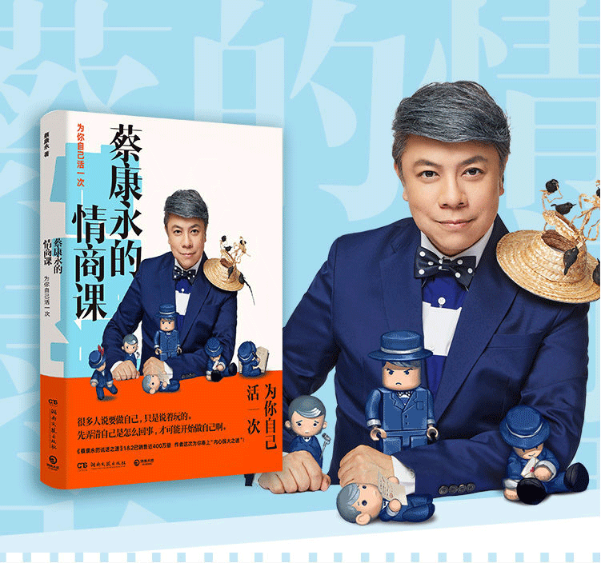
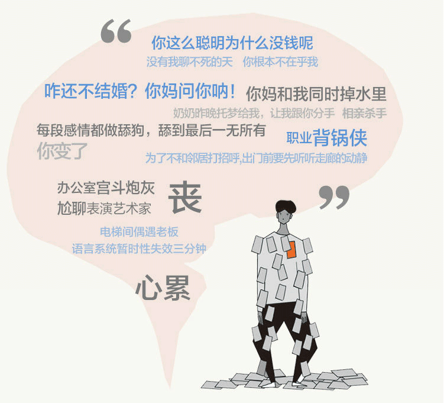
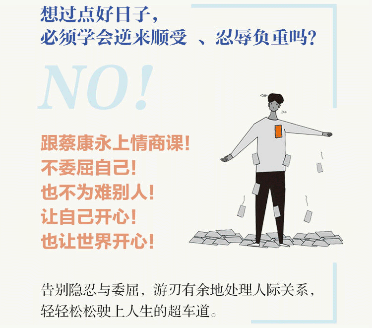

首页



Previous
Next
商品名称: 《蔡康永的情商课》
价 格:￥31.50
商品类型：书籍
运费:包邮
库存：有货
1.此商品不支持7天无理由退货
2.此商品由 海囤全球 发货并提供售后服务
3.此商品不提供国内购物发票
4.此商品支持白条30天免息或分期支付，不可使用京豆、京东卡、京东E卡、余额支付，不支持货到付款
5.根据中国海关总署要求，您所购买的商品清关入境需要提供身份证信息进行入境申报，请您配合。我们不会向第三方泄露您的资料，请您放心
立即购买
加入购物车
详 情
内容简介: 情商是什么？ 在蔡康永看来，情商，是人应对一切关系的能力总和，而情商真正的意义，在于愉快地做自己。我们训练情商，不是为了扭曲自己去讨人喜欢，而是为了做情绪的主人。康永哥的高情商，对外表现为世事洞明、人情练达，对内则表现为平静愉悦，内心自洽。让自己开心的同时，也让世界开心。只有想得通透，才能活得痛快。拥有高情商的人，可以让自我活得更加舒适，不会陷入负面情绪中无法自拔，进而在爱情、亲情、友情中，都能更好地经营一段舒服的关系。 那么，情商应该怎么学？ 康永哥的每一堂课程，都有认知心理学方面的学术观点作理论根基，但关键的是，他回应的都是真实而具体的生活场景。康永哥化繁为简，在课程中提炼出了5种核心能力，包括：情绪管理力、个性塑造、态度养成、领导力，以及个人魅力。你在社交、家庭、爱情和职场等所有场合，能遇到的所有你认为与情商相关的困惑，都可以通过这5种能力得到化解。康永哥的情商课，教你的绝对不是屠龙之技、更不是课堂上背教科书，而是每一课都有一个看得到的小收获，是你能马上拿来能用的小技巧。 如果你不愿被愤怒、悲伤、沮丧、嫉妒等负面情绪控制， 如果你希望在彰显自己时不冒犯别人，照顾他人时不委屈自己， 如果你想在职场和情场都如鱼得水， 如果你希望摆脱小透明、边缘人的标签， 《蔡康永的情商课》就是适合你的选择。 作者简介: 蔡康永 从上个世纪的尾巴，开始参加公共活动，比方说，主持一些节目，写一些东西，讲些话，安慰或者伤害一些别人。 生产地是台北，血统有时被认为是上海。 在加州大学洛杉矶分校UCLA念完影视制作的研究所。广为人知的节目，是主持《康熙来了》及参与《奇葩说》，广为人知的书是《说话之道》，导过一部电影《吃吃的爱》，也曾经和艺术家蔡国强及五月天的主唱阿信，分别一起做过行为艺术及装置艺术。另外，开了《情商课》的语音课程，在喜马拉雅FM播放。 觉得活着确实有活着的乐趣，但“意义”“快乐”“爱情”都被高估了，可以更放松、更恰当地看待这些事。 觉得写书是“探测自己”的过程。如果写出来的书，刚好也能够令看到的人，拿去各自探测自己，这书就写得值得。 活着的根本乐趣之一，就是不确定，就是勘察与测量自己的内心。王国维说“千门万户是耶非……唯有兹疑不可疑。” 只有疑过之后的明白，才是可以依靠的明白。 只有明白之后，自己才会出现。
评 价
暂无评价